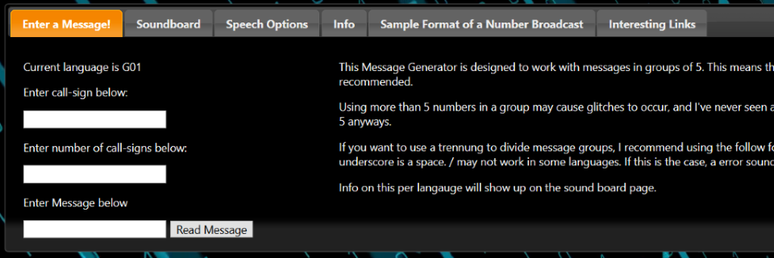
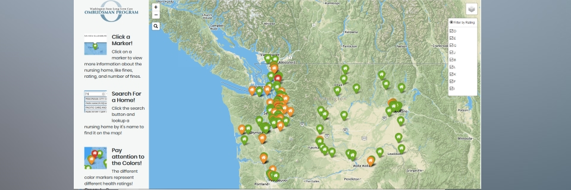

More About Me
Bradley Seyler is a 21 year computer science geek who likes to develop backend code for websites and computer applications. He recieved his Bachelors in Applied Science in June of 2019, and aims to expand his knowledge of programming languages
In his time at Green River College, he developed a prototype website for SKCAC Industries, built a heatmap for Washington Ombudsman, and much more!
Click here to view some of my past projects!
If you would like to view my resume, you can view it here in PDF format.
Past Projects
Below are a few projects I've developed both professionally for my degree, and in spare time. If a project still exists, click the image to check the site out!
SKCAC Inustries Website
This was the first website I ever developed professionally. Me and three other people developed a site for SKCAC Industries which would help them to reduce their paperwork load by almost 70%! This was done by converting all paper forms into lightweight web forms, as well as allowing a user to pull data from their last years form in case it hadn't changed. Unfortunately, this site has been lost to time, with this screenshot being all that is left of it.
Numbers Generator Application

This small application I built in my spare time allows a user to generate coded numbers station sounds, using actual recordings of numbers stations (a small hobby of mine). More information is on the actual page itself.
MSC Heat Map

This and the next project on this list are probably the most impressive projects I have developed on. For this project, me and my group of four were asked by Washington Ombudsman to make a heatmap of the worst nursing homes in the state of Washington.
We achieved this by making a script which loaded in data from Propublica on a daily basis at midnight, which was then loaded into a map made in Open StreetMaps. This site was deployed on the
Washington Ombudsman Website, and is still accessible today. The GitHub repository can be found here.
WTIA Connections Site
This is my groups latest project. Our group was tasked with continuing development of a site that was created in a lower level class. Our client wanted us to create software that could
allow educators to connect with industry professionals so that they could speak at their events. This site is split into two account types, one for each type of person who would be using our
website. This project has not yet been deployed, and as such, the link may go down after the school year. However, the GitHub repository can be found here.
Contact
If you'd like to contact me, you can use one of the following links! Just in case the mailto link fails,
you can email me at bradleyseyler@gmail.com.